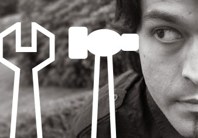

Hi! I am Mark. A web designer from Leeds, England...

Photo: ©2008 Tristen Copeland
My specialisties are:
Knowing Me...
I have had the pleasure of working with some interesting clients in the fields of music, theatre and the arts.
...Knowing You
In order to create the perfect brand I believe it is important to get to know my clients from the ground upwards. I design logos, brands and websites by exploring what visual emotional connections can be made between you and your customers.
A Design for Life
I design all my websites using a strict "Don't Make Me Think" policy whereby providing a good user experience is key to keeping users interested and engaged in your website.
Every project I undertake includes:
- Creative consultation
- A guide through the creative process
- Wireframes & drafts
- 15-20 page project proposal
- Agreed time frame
- Feedback and evaluation
"Mark took the time to get to know us as a company and from scratch created us a brand which not only fits perfectly, but feels inevitable. We couldn't imagine it any other way." - J. Rastall - Troupers, Co-Director
See more of my projects here:
Or discuss your project you can